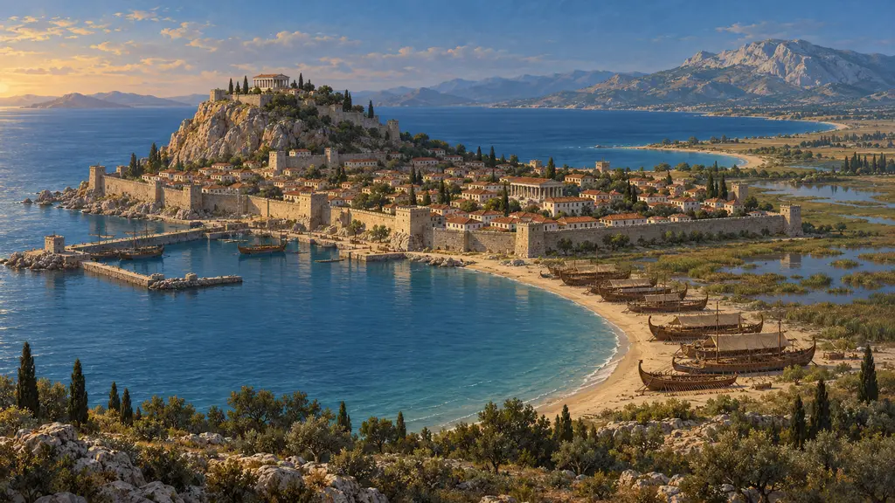
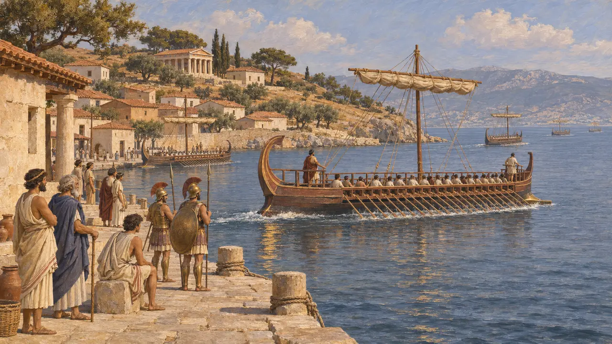
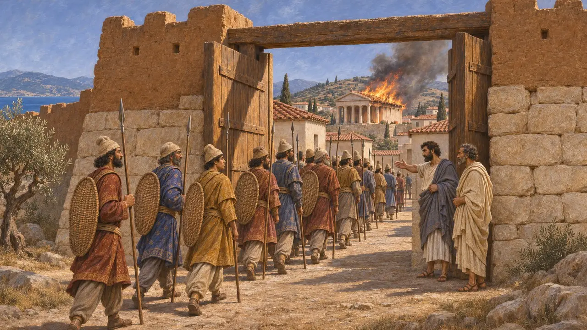
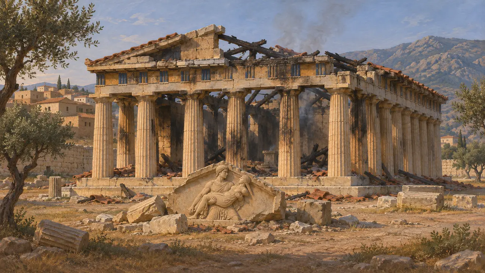
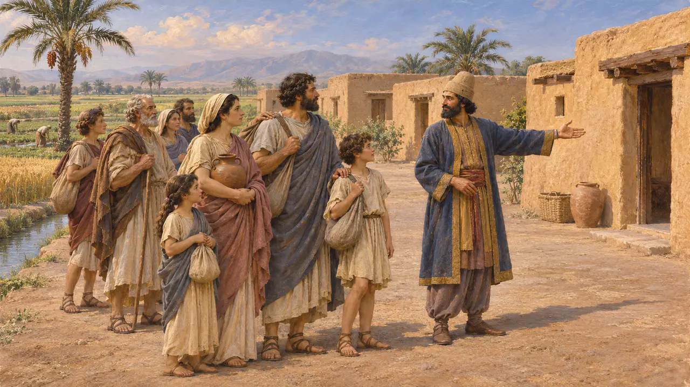
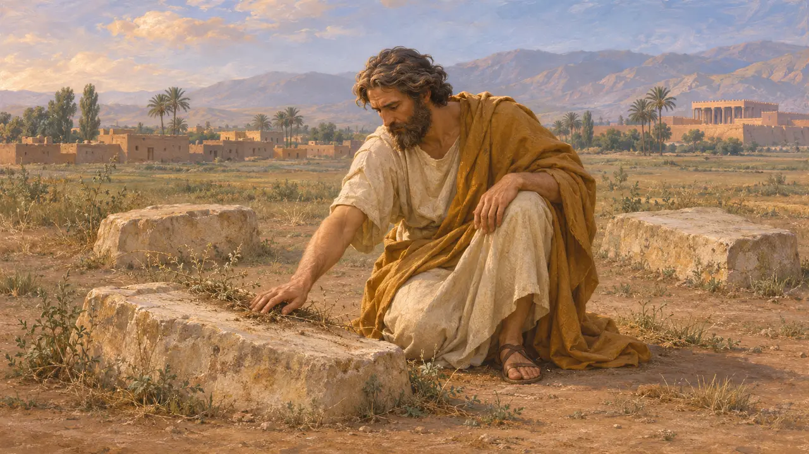

Les Érétriens
Citoyens d'Érétrie en Eubée, capturés et réinstallés près de Suse en 490 av. J.-C.
Dans le jeu : Niveau 7 : Sardes brûle, Niveau 8 : La Baie de Marathon
Les Érétriens étaient les citoyens d'Érétrie, cité grecque de l'île d'Eubée. Leurs cinq navires aidèrent les rebelles ioniens à incendier Sardes en 498 av. J.-C. En 490 av. J.-C., une expédition perse menée par Datis et Artapherne prit la cité et incendia ses temples. Une grande partie de ses habitants fut emmenée dans les basses terres autour de Suse, où Darius les installa sur des terres royales.
Dans le jeu : Le jeu montre la chute d'Érétrie en 490 av. J.-C., avant Marathon, et l'installation de ses habitants à Arderikka, en Élam. Hérodote situe Ardéricca en Cissie, près de Suse, dans l'ancienne plaine élamite, mais le site n'a jamais été retrouvé.

Une cité d'Eubée
Récit antiqueÉrétrie se dressait sur la côte sud-ouest de l'Eubée, face à la Béotie et à l'Attique, de l'autre côté d'un étroit golfe. Thucydide évoque une ancienne guerre entre Érétrie et sa voisine Chalcis, dans laquelle une grande partie de la Grèce prit parti. Hérodote rapporte que les Érétriens envoyèrent cinq trières à la révolte ionienne pour rendre à Milet l'aide reçue dans cette guerre. Ils firent voile avec vingt navires athéniens jusqu'à Éphèse et montèrent jusqu'à Sardes, qui fut incendiée en 498 av. J.-C.
Herodotus 5.99-102; Thucydides 1.15

Le siège de 490 av. J.-C.
Récit antiqueHérodote raconte que la flotte de Datis et d'Artapherne traversa l'Égée et débarqua sur le territoire d'Érétrie. Cet Artapherne était le fils du satrape de Sardes. Les Érétriens choisirent de défendre leurs murailles plutôt que de fuir dans les collines, et pendant six jours les deux camps perdirent de nombreux hommes. Le septième jour, deux citoyens de premier rang, Euphorbe et Philagros, livrèrent la ville aux Perses, et les temples furent incendiés pour venger ceux de Sardes.
Herodotus 6.100-101

Les traces de l'incendie
Dans les sourcesLes fouilles d'Érétrie, entreprises par des archéologues grecs et poursuivies depuis 1964 par l'École suisse d'archéologie en Grèce, ont mis au jour le sanctuaire d'Apollon Daphnéphoros. Son temple de pierre de la fin de l'époque archaïque fut bâti peu avant 490 av. J.-C. et porte des traces de destruction, que les fouilleurs rattachent au sac perse. Des sculptures de son fronton subsistent, dont un groupe montrant Thésée enlevant l'Amazone Antiope.
Greek and Swiss excavation reports on the sanctuary of Apollo Daphnephoros, Eretria

Établis à Ardéricca
Récit antiqueHérodote rapporte que les captifs furent laissés sur l'îlot d'Aigilia pendant la campagne de Marathon, puis emmenés à Suse. Darius, qui avait d'abord été irrité contre eux, ne leur fit aucun mal et les établit sur un domaine royal à Ardéricca, en Cissie. Ce lieu se trouvait à 210 stades de Suse, soit environ 40 kilomètres, et à 40 stades d'un puits qui donnait du bitume, du sel et de l'huile. Du temps d'Hérodote, ils y parlaient encore le grec, et aucun document perse ne les mentionne.
Herodotus 6.107; 6.115; 6.119

Une visite dans un roman tardif
Légende tardivePhilostrate, qui écrit au IIIe siècle apr. J.-C., rapporte que le sage errant Apollonios de Tyane rendit visite aux Érétriens de Cissie des siècles après leur déportation. Dans son récit, Apollonios trouva leurs tombes portant des inscriptions grecques et en prit soin. L'anecdote appartient à une œuvre remplie de prodiges et ne peut être vérifiée, et Ardéricca elle-même n'a jamais été localisée.
Philostratus, Life of Apollonius of Tyana 1.23-24
Sources
- Herodotus 6.100-101, 6.107, 6.115, 6.119
- Herodotus 5.99-102
- Thucydides 1.15
- Philostratus, Life of Apollonius of Tyana 1.23-24
- P. Briant, From Cyrus to Alexander, 2002